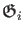

Next: Frame order modelling Up: Frame order theory Previous: Double pivoted motions Contents Index
In Perrin's equations for free ellipsoidal Brownian diffusion (Perrin, 1934,1936), the second degree frame order matrix elements  are an essential step of the derivation. From Perrin (1936), the solution for the ellipsoidal diffusion equation is
where
μi =  , , |
(12.69) |
 |
(12.70) |
 |
(12.71) |
 are the three diffusion rates, and cij are the direction cosines in the diffusion frame.
According to Perrin (1936), because of the symmetry of the rotation the averages of the double-products
where an index appears only once are zero and the second degree frame order matrix is represented by equation 12.15 on page
are the three diffusion rates, and cij are the direction cosines in the diffusion frame.
According to Perrin (1936), because of the symmetry of the rotation the averages of the double-products
where an index appears only once are zero and the second degree frame order matrix is represented by equation 12.15 on page ![[*]](crossref.png) .
At time t = 0, the frame order matrix simplifies to
.
At time t = 0, the frame order matrix simplifies to
| Daeg(n)(0) = I1, | (12.72) |
and at time t = ∞ the matrix decays to
| Daeg(n)(∞) = |
(12.73) |
The free ellipsoid Brownian diffusion equations form the base theory for interpreting NMR relaxation data - the spheroidal and spherical diffusion equations are simply parametric restrictions of the full ellipsoid equations. As they are the definition of the frame order matrix, the frame order tensor can be seen as the modulator of all NMR relaxation processes.
The relax user manual (PDF), created 2015-12-14.